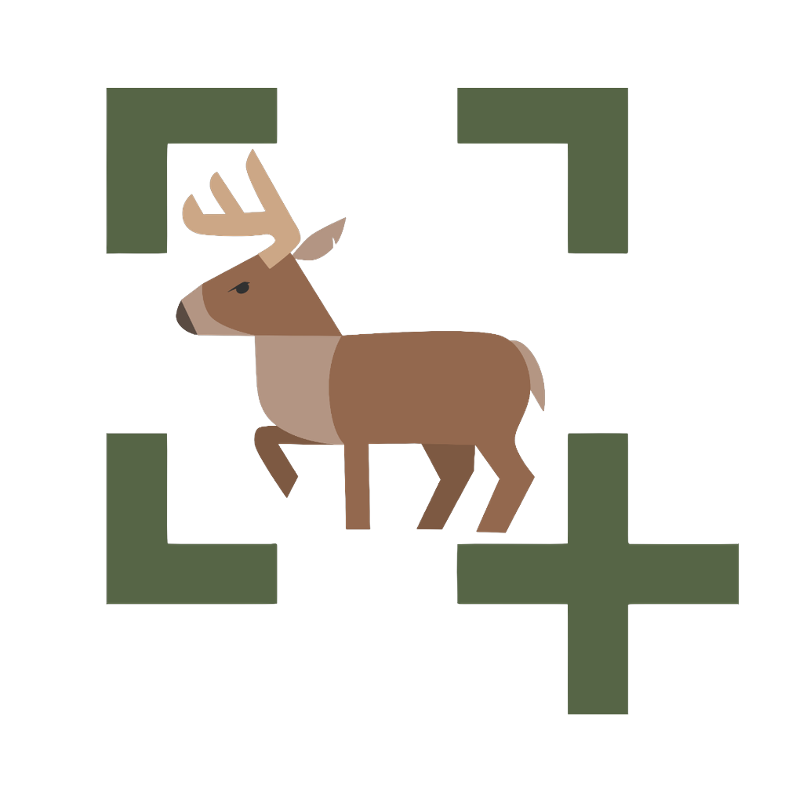

Nenhuma captura no editor
Pressione a tecla de atalho ou clique no botão acima para selecionar uma área da tela.
Atalho atual:
PrintScreen

Pressione a tecla de atalho ou clique no botão acima para selecionar uma área da tela.
Pressione para gravar a tecla que irá disparar o recorte de tela.
Cada nova captura é salva automaticamente como arquivo PNG nesta pasta.
Escolha uma das variações de aparência visual para transformar o design do editor.
Escuro elegante com acentos em ciano elétrico e azul índigo.
Preto profundo com reflexos em roxo elétrico e magenta neon.
Tons de ardósia marítima, azul nórdico e toques em ciano ártico.
Grafite profundo tecnológico com realces em verde esmeralda e menta.
Visual claro e minimalista para trabalho com máxima iluminação.
Escolha o formato e a geometria dos botões para combinar com o tema visual.
Cantos levemente arredondados, design técnico e equilibrado.
Curvatura contínua 100% arredondada, suave e orgânica.
Efeito translúcido de vidro fosco com brilho sutil nas bordas.
Geometria reta e compacta para máxima área útil e foco.
Pressione a tecla de atalho (F10 ou PrintScreen) ou clique em Capturar no topo.
Arraste o cursor sobre a área desejada da tela. O print será aberto no editor e copiado imediatamente para o Ctrl+V.
Na barra lateral esquerda Palavras / Tags, clique e arraste qualquer palavra para cima da imagem para posicioná-la.
Dê dois cliques em qualquer tag na imagem para editar o texto ou use o campo de adicionar para criar novas tags personalizadas.
Selecione a ferramenta Seta (A) ou Retângulo (R) e desenhe livremente.
Você pode puxar setas diretamente de cima de palavras ou retângulos sem que eles sejam selecionados ou movidos!
Use a ferramenta Vidro Fosco (G) para desenhar caixas sobre dados confidenciais (senhas, CPF, valores sensíveis).
Ajuste a intensidade do desfoque no controle deslizante conforme sua necessidade.
O assistente de desinstalação será iniciado e o aplicativo será fechado para remover os arquivos do seu computador.